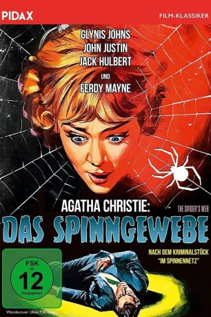

#11671 Das Spinngewebe
Alternativ: The Spider's Web (Englischer Titel)
 
 IMDB-Wertung: 6.2 / 10
IMDB-Wertung: 6.2 / 10  Tomatometer: 40
Tomatometer: 40  Metascore: 0
Metascore: 0 
Ein altenglischer Landsitz: Clarissa Hailsham-Brown findet beim Betreten des Wohnzimmers eine Leiche. Eine absolute Katastrophe, zumal ihr Ehemann Henry, ein erfolgreicher Diplomat, abends einen wichtigen Politiker eingeladen hat. Clarissa beschließt, die Leiche fortzuschaffen. Bleibt die Frage: Wer ist der Tote? Und wer ist der Mörder?
Jahr: 1960
Dauer: 88 Minuten
FSK: 12
Land: England Studio: Pidax FilmTonspuren: DD2.0 - ,
Untertitel:
Auflösung: 1080p (1488x1080) Größe: 5591 MB
Genre: Mystery
Regisseur: Godfrey Grayson
Drehbuch: Agatha Christie, Eldon Howard, Albert G. Miller
Soundtrack: Tony Crombie
Darsteller:
 Glynis Johns als Clarissa Hailsham-Brown
Glynis Johns als Clarissa Hailsham-Brown- John Justin als Henry Hailsham-Brown
- Jack Hulbert als Sir Rowland Delahaye
- Cicely Courtneidge als Miss Peake
- Basil Dignam als Hugo
 Ferdy Mayne als Oliver
Ferdy Mayne als Oliver Peter Butterworth als Insp. Lord
Peter Butterworth als Insp. Lord Anton Rodgers als Sgt. Jones
Anton Rodgers als Sgt. Jones- Robert Raglan als Dr. Berry
- Ronald Howard als Jeremy
- David Nixon als Elgin
- Wendy Turner als Pippa
- Joan Sterndale-Bennett als Mrs. Elgin
Datei: X:\Person\Agatha Christie\Spinngewebe, Das (1960, FSK12, 1488x1080).mkv seit 14.08.2019
Festplatte: HD Collection-7+mehr(A-Z)+Person
 Es gibt insgesamt 12 Filme in der Gruppe 'Person\Agatha Christie'
Es gibt insgesamt 12 Filme in der Gruppe 'Person\Agatha Christie'